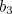
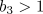

On this page, we briefly review two other amplitude descriptions, composed of two complex Ginzburg-Landau equations coupled together.
As noted in our original survey of the CGLE, when the oscillatory system has a reflection symmetry, one has to take into account modes travelling in both directions. As such, the weakly nonlinear patterns are of the form:
Following the same arguments for the derivation of the CGLE, one finds the appropriate amplitude equations to be the complex coupled Ginzburg-Landau equations (CCGLE):
Depending on the nonlinear interaction coefficient, ,
two forms of plane wave can be stable. For , the
preferred pattern takes the form of travelling waves, analogous to those detailed
earlier. However, for
 , the selected patterns are standing waves.
The stability behaviour of standing waves is more complicated than for travelling waves; their
stability regions are delimited by several non-trivial boundaries (see
Riecke and Kramer, 2000). They also
play host to a wide variety of coherent structures
(see van Hecke et al., 1999).
, the selected patterns are standing waves.
The stability behaviour of standing waves is more complicated than for travelling waves; their
stability regions are delimited by several non-trivial boundaries (see
Riecke and Kramer, 2000). They also
play host to a wide variety of coherent structures
(see van Hecke et al., 1999).
One has to be cautious with the range of validity of the CCGLE. This is because the coupled equations are only formally valid when the group velocity is small. In the more widely applicable case of finite group velocity, the CCGLE fail to scale uniformly with the distance above threshold and their validity is not guaranteed. Rather, as proposed by Knobloch and De Luca (1990), the counter-propagating amplitudes need to be treated in separate moving frames. In this formulation, the appropriate amplitude equations are the mean-field Ginzburg-Landau equations (MFGL):
where the angled braces  denote
averages in the co-moving frames of the amplitudes. In this case,
the travelling modes move past each other so quickly that they
only interact through their average values.
denote
averages in the co-moving frames of the amplitudes. In this case,
the travelling modes move past each other so quickly that they
only interact through their average values.